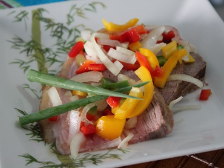

<!DOCTYPE html>
<html>
  <head>
    <meta charset="utf-8">
    <meta name="viewport" content="initial-scale=1, maximum-scale=1, user-scalable=no, width=device-width">
    <title></title>

    <link href="lib/ionic/css/ionic.css" rel="stylesheet">
    <link href="css/style.css" rel="stylesheet">

    <!-- IF using Sass (run gulp sass first), then uncomment below and remove the CSS includes above
    <link href="css/ionic.app.css" rel="stylesheet">
    -->

    <!-- ionic/angularjs js -->
    <script src="lib/ionic/js/ionic.bundle.js"></script>

    <script src="lib/angular-translate/angular-translate.min.js"></script>
    <script src="lib/angular-translate-loader-static-files/angular-translate-loader-static-files.min.js"></script>

    <!-- cordova script (this will be a 404 during development) -->
    <script src="cordova.js"></script>

    <!-- your app's js -->
    <script src="js/app.js"></script>
    <script src="js/app-settings.js"></script>
    <script src="js/services.js"></script>
  </head>
 <body ng-app="app">

<ion-nav-bar class="bar-positive">
<ion-nav-back-button></ion-nav-back-button>
</ion-nav-bar>
<ion-nav-view></ion-nav-view>

<script id="templates/menu.html" type="text/ng-template">
 <ion-side-menus>

 <!-- Main Content -->
 <ion-side-menu-content>
  <ion-nav-bar class="bar-positive view-header" align-title="center">
   <ion-nav-back-button class="view-top-button">
   </ion-nav-back-button>

   <ion-nav-buttons side="left">
     <button class="button button-icon button-clear ion-navicon view-top-button" menu-toggle="left">
     </button>
   </ion-nav-buttons>
 </ion-nav-bar>
 <ion-nav-view name="menuContent"></ion-nav-view>
 </ion-side-menu-content>

 <!-- Left Side Menu -->
 <ion-side-menu side="left">
  <ion-header-bar class="bar-stable">
    <h1 class="title" translate>MENU_TITLE</h1>
  </ion-header-bar>
  <ion-content>
    <ion-list>
      <ion-item menu-close href="#/app/start">{{ 'START_TITLE' | translate }}</ion-item>
      <ion-item menu-close href="#/app/my_recipes">{{ 'MY_RECIPES' | translate }}</ion-item>
      <ion-item menu-close href="#/app/prefs">{{ 'MY_PREFS' | translate }}</ion-item>
      <ion-item menu-close href="#/app/about">{{ 'ABOUT' | translate }}</ion-item>
    </ion-list>
  </ion-content>
 </ion-side-menu>
 
 </ion-side-menus>
</script>

<script id="templates/start.html" type="text/ng-template">
 <ion-view>
		<ion-nav-title class="view-title">{{ 'START_TITLE' | translate }}</ion-nav-title>
		<ion-content class="padding">
			</img>
			<div>
				<label class="item item-input start-textbox">
					<input type="text" placeholder="{{ 'INGREDIENTS_PLACEHOLDER' | translate }}" ng-model="data.searchString">
				</label>
				</button>
				<button class="button button-positive button-full start-search-button" ng-click="search()" translate>FIND_BUTTON</button>
			</div>
      </ion-content>
 </ion-view>
</script>

<script id="templates/search_results.html" type="text/ng-template">
<ion-view>
	<ion-nav-title class="view-title">{{ 'SEARCH_RESULT_TITLE' | translate }}</ion-nav-title>
	<ion-content class="search-results-container">
		<div class="search-results-tabs-container">
			<div ng-class="tab_classes.recipes_tab" ng-click="clicked_on_tab('recipes_tab')">
				<p class="search-results-tab-title">
					{{ 'RECIPES' | translate }}
				</p>
			</div>
			<div ng-class="tab_classes.filters_tab" ng-click="clicked_on_tab('filters_tab')">
				<p class="search-results-tab-title">
					{{ 'FILTERS' | translate }}
				</p>
			</div>
		</div>
		<div class="search-results-recipes-container" ng-show="tab_classes.recipes_tab['search-results-selected-tab']">
			<div class="search-results-recipe" ng-repeat="recipe in filtered_recipes" ng-click=select_recipe($index)>
				
				<p class="search-results-recipe-title">{{ recipe.title }}</p>
			</div>
		</div>
		<div class="search-results-filters-container" ng-show="tab_classes.filters_tab['search-results-selected-tab']">
			<div class="search-results-filter">
				<h3 class="search-results-filter-title">{{ 'RECIPE_CATEGORY_FILTER_TITLE' | translate }}</h3>
				<ion-checkbox ng-repeat="cat in recipe_categories"
					class="search-results-filter-checkbox"
					id="search-results-filter-{{ cat.name }}"
					type="checkbox"
					name="selected_categories"
					value="{{ cat.name }}"
					ng-model="cat.selected">
					{{ cat.name }}
				</ion-checkbox>
			</div>
			<div class="search-results-filter">
				<h3 class="search-results-filter-title">{{ 'TOTAL_TIME_CATEGORY_FILTER_TITLE' | translate }}</h3>
				<ion-checkbox ng-repeat="cat in total_time_categories"
					class="search-results-filter-checkbox"
					type="checkbox"
					name="selected_total_times"
					value="{{ cat.name }}"
					ng-model="cat.selected">
					{{ cat.name }}
				</ion-checkbox>
			</div>
			<button class="button button-positive button-full search-results-filter-button" ng-click="apply_filters()">{{ 'APPLY_FILTERS' | translate }}</button>
		</div>
	</ion-content>
</ion-view>
</script>

<script id="templates/show_recipe.html" type="text/ng-template">
	<ion-view>
		<ion-nav-title class="view-title">{{ 'VIEWING_RECIPE' | translate }}</ion-nav-title>
		<ion-content class="show-recipe-main-container">
			<div class="show-recipe-container">
				</img>
				<table class="show-recipe-info-container">
					<tr>
						<td class="show-recipe-title">{{ recipe.title }}</td>
						<td class="show-recipe-time-circle-container">
							
							<p class="show-recipe-time-value">{{ recipe.total_time }}</p>
							<p class="show-recipe-time-unit">min</p>
						</td>
					</tr>
				</table>
					</div>
				</div>
				<div class="show-recipe-tabs-container">
					<div ng-class="tab_classes.ingredients_tab" ng-click="clicked_on_tab('ingredients_tab')">
						<p class="show-recipe-tab-title">
							{{ 'INGREDIENTS_TAB_TITLE' | translate }}
						</p>
					</div>
					<div ng-class="tab_classes.directions_tab" ng-click="clicked_on_tab('directions_tab')">
						<p class="show-recipe-tab-title">
							{{ 'DIRECTIONS_TAB_TITLE' | translate }}
						</p>
					</div>
				</div>
				<div class="show-recipe-section-container" ng-show="tab_classes.ingredients_tab['show-recipe-selected-tab']">
					<div class="show-recipe-sub-section-container">
						<ul class="show-recipe-item-list">
							<li class="show-recipe-list-item" ng-repeat="ingredient in recipe.ingredients">
								{{ ingredient.qty }} {{ ingredient.unit }} {{ ingredient.name }}
							</li>
						</ul>
					</div>
				</div>
				<div class="show-recipe-section-container" ng-show="tab_classes.directions_tab['show-recipe-selected-tab']">
					<ul class="show-recipe-item-list">
						<p class="show-recipe-list-item">
							{{ recipe.directions }}
						</p>
					</ul>
				</div>
			</div>
		</ion-content>
	</ion-view>
</script>

<script id="templates/my_recipes.html" type="text/ng-template">
 <ion-view view-title="{{ 'MY_RECIPES' | translate }}">
   <ion-content>
     <h1>{{ 'MY_RECIPES' | translate }}</h1>
   </ion-content>
 </ion-view>
</script>

<script id="templates/prefs.html" type="text/ng-template">
 <ion-view view-title="{{ 'MY_PREFS' | translate }}">
   <ion-content>
     <h1>{{ 'MY_PREFS' | translate }}</h1>
   </ion-content>
 </ion-view>
</script>

<script id="templates/about.html" type="text/ng-template">
 <ion-view view-title="{{ 'ABOUT' | translate }}">
   <ion-content>
     <h1>{{ 'ABOUT' | translate }}</h1>
   </ion-content>
 </ion-view>
</script>

</body>
</html>
